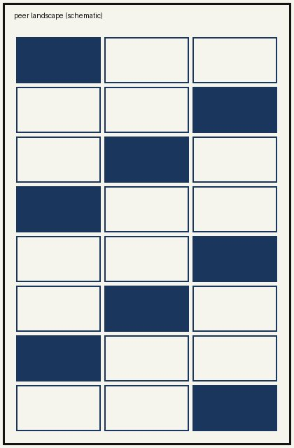

一、空章节与连续标题
二、标题紧跟标题
2.1 第一个小节
2.2 紧接着的第二个小节
2.3 第三个小节
三个小节标题连着出现，只有最后一个后面有正文。这句话在报告里出现三次，用来检验批注按引文重新定位时能区分重复短语。
三、重复短语（批注重新定位）
这句话在报告里出现三次，用来检验批注按引文重新定位时能区分重复短语。
夹在中间的另一段普通正文，内容不同。
这句话在报告里出现三次，用来检验批注按引文重新定位时能区分重复短语。
- 列表项里也有批注目标：高亮片段后面还有文字。
- 二级列表项。
- 三级列表项，嵌套较深。
- 二级列表项。
| 项目 | 说明 |
|---|---|
| 表格单元格 | 批注也可能落在表格单元格里，这一格有较长的文字用于选中。 |
四、近满页表格（标题与表格同页放不下）
4.1 明细
| 序号 | 事项 | 数值 |
|---|---|---|
| 1 | 近满页表格第 1 行 | 1 |
| 2 | 近满页表格第 2 行 | 2 |
| 3 | 近满页表格第 3 行 | 3 |
| 4 | 近满页表格第 4 行 | 4 |
| 5 | 近满页表格第 5 行 | 5 |
| 6 | 近满页表格第 6 行 | 6 |
| 7 | 近满页表格第 7 行 | 7 |
| 8 | 近满页表格第 8 行 | 8 |
| 9 | 近满页表格第 9 行 | 9 |
| 10 | 近满页表格第 10 行 | 10 |
| 11 | 近满页表格第 11 行 | 11 |
| 12 | 近满页表格第 12 行 | 12 |
| 13 | 近满页表格第 13 行 | 13 |
| 14 | 近满页表格第 14 行 | 14 |
| 15 | 近满页表格第 15 行 | 15 |
| 16 | 近满页表格第 16 行 | 16 |
| 17 | 近满页表格第 17 行 | 17 |
| 18 | 近满页表格第 18 行 | 18 |
| 19 | 近满页表格第 19 行 | 19 |
| 20 | 近满页表格第 20 行 | 20 |
| 21 | 近满页表格第 21 行 | 21 |
| 22 | 近满页表格第 22 行 | 22 |
| 23 | 近满页表格第 23 行 | 23 |
近满页表格之后的一段正文。
五、超长表格（高于一张 Sheet）
下面的表格有 70 行，比一张 Sheet 还高。按设计，作者应当自己拆表；这里保留它来检验警告和单独成页的行为。
| 序号 | 事项 | 数值 |
|---|---|---|
| 1 | 虚构明细事项 1 | 3 |
| 2 | 虚构明细事项 2 | 6 |
| 3 | 虚构明细事项 3 | 9 |
| 4 | 虚构明细事项 4 | 12 |
| 5 | 虚构明细事项 5 | 15 |
| 6 | 虚构明细事项 6 | 1 |
| 7 | 虚构明细事项 7 | 4 |
| 8 | 虚构明细事项 8 | 7 |
| 9 | 虚构明细事项 9 | 10 |
| 10 | 虚构明细事项 10 | 13 |
| 11 | 虚构明细事项 11 | 16 |
| 12 | 虚构明细事项 12 | 2 |
| 13 | 虚构明细事项 13 | 5 |
| 14 | 虚构明细事项 14 | 8 |
| 15 | 虚构明细事项 15 | 11 |
| 16 | 虚构明细事项 16 | 14 |
| 17 | 虚构明细事项 17 | 0 |
| 18 | 虚构明细事项 18 | 3 |
| 19 | 虚构明细事项 19 | 6 |
| 20 | 虚构明细事项 20 | 9 |
| 21 | 虚构明细事项 21 | 12 |
| 22 | 虚构明细事项 22 | 15 |
| 23 | 虚构明细事项 23 | 1 |
| 24 | 虚构明细事项 24 | 4 |
| 25 | 虚构明细事项 25 | 7 |
| 26 | 虚构明细事项 26 | 10 |
| 27 | 虚构明细事项 27 | 13 |
| 28 | 虚构明细事项 28 | 16 |
| 29 | 虚构明细事项 29 | 2 |
| 30 | 虚构明细事项 30 | 5 |
| 31 | 虚构明细事项 31 | 8 |
| 32 | 虚构明细事项 32 | 11 |
| 33 | 虚构明细事项 33 | 14 |
| 34 | 虚构明细事项 34 | 0 |
| 35 | 虚构明细事项 35 | 3 |
| 36 | 虚构明细事项 36 | 6 |
| 37 | 虚构明细事项 37 | 9 |
| 38 | 虚构明细事项 38 | 12 |
| 39 | 虚构明细事项 39 | 15 |
| 40 | 虚构明细事项 40 | 1 |
| 41 | 虚构明细事项 41 | 4 |
| 42 | 虚构明细事项 42 | 7 |
| 43 | 虚构明细事项 43 | 10 |
| 44 | 虚构明细事项 44 | 13 |
| 45 | 虚构明细事项 45 | 16 |
| 46 | 虚构明细事项 46 | 2 |
| 47 | 虚构明细事项 47 | 5 |
| 48 | 虚构明细事项 48 | 8 |
| 49 | 虚构明细事项 49 | 11 |
| 50 | 虚构明细事项 50 | 14 |
| 51 | 虚构明细事项 51 | 0 |
| 52 | 虚构明细事项 52 | 3 |
| 53 | 虚构明细事项 53 | 6 |
| 54 | 虚构明细事项 54 | 9 |
| 55 | 虚构明细事项 55 | 12 |
| 56 | 虚构明细事项 56 | 15 |
| 57 | 虚构明细事项 57 | 1 |
| 58 | 虚构明细事项 58 | 4 |
| 59 | 虚构明细事项 59 | 7 |
| 60 | 虚构明细事项 60 | 10 |
| 61 | 虚构明细事项 61 | 13 |
| 62 | 虚构明细事项 62 | 16 |
| 63 | 虚构明细事项 63 | 2 |
| 64 | 虚构明细事项 64 | 5 |
| 65 | 虚构明细事项 65 | 8 |
| 66 | 虚构明细事项 66 | 11 |
| 67 | 虚构明细事项 67 | 14 |
| 68 | 虚构明细事项 68 | 0 |
| 69 | 虚构明细事项 69 | 3 |
| 70 | 虚构明细事项 70 | 6 |
六、超高图片

七、超长段落
第 1 句：这是一段刻意写得很长的虚构文字，用来验证单个段落高于一张 Sheet 时的行为。第 2 句：这是一段刻意写得很长的虚构文字，用来验证单个段落高于一张 Sheet 时的行为。第 3 句：这是一段刻意写得很长的虚构文字，用来验证单个段落高于一张 Sheet 时的行为。第 4 句：这是一段刻意写得很长的虚构文字，用来验证单个段落高于一张 Sheet 时的行为。第 5 句：这是一段刻意写得很长的虚构文字，用来验证单个段落高于一张 Sheet 时的行为。第 6 句：这是一段刻意写得很长的虚构文字，用来验证单个段落高于一张 Sheet 时的行为。第 7 句：这是一段刻意写得很长的虚构文字，用来验证单个段落高于一张 Sheet 时的行为。第 8 句：这是一段刻意写得很长的虚构文字，用来验证单个段落高于一张 Sheet 时的行为。第 9 句：这是一段刻意写得很长的虚构文字，用来验证单个段落高于一张 Sheet 时的行为。第 10 句：这是一段刻意写得很长的虚构文字，用来验证单个段落高于一张 Sheet 时的行为。第 11 句：这是一段刻意写得很长的虚构文字，用来验证单个段落高于一张 Sheet 时的行为。第 12 句：这是一段刻意写得很长的虚构文字，用来验证单个段落高于一张 Sheet 时的行为。第 13 句：这是一段刻意写得很长的虚构文字，用来验证单个段落高于一张 Sheet 时的行为。第 14 句：这是一段刻意写得很长的虚构文字，用来验证单个段落高于一张 Sheet 时的行为。第 15 句：这是一段刻意写得很长的虚构文字，用来验证单个段落高于一张 Sheet 时的行为。第 16 句：这是一段刻意写得很长的虚构文字，用来验证单个段落高于一张 Sheet 时的行为。第 17 句：这是一段刻意写得很长的虚构文字，用来验证单个段落高于一张 Sheet 时的行为。第 18 句：这是一段刻意写得很长的虚构文字，用来验证单个段落高于一张 Sheet 时的行为。第 19 句：这是一段刻意写得很长的虚构文字，用来验证单个段落高于一张 Sheet 时的行为。第 20 句：这是一段刻意写得很长的虚构文字，用来验证单个段落高于一张 Sheet 时的行为。第 21 句：这是一段刻意写得很长的虚构文字，用来验证单个段落高于一张 Sheet 时的行为。第 22 句：这是一段刻意写得很长的虚构文字，用来验证单个段落高于一张 Sheet 时的行为。第 23 句：这是一段刻意写得很长的虚构文字，用来验证单个段落高于一张 Sheet 时的行为。第 24 句：这是一段刻意写得很长的虚构文字，用来验证单个段落高于一张 Sheet 时的行为。第 25 句：这是一段刻意写得很长的虚构文字，用来验证单个段落高于一张 Sheet 时的行为。第 26 句：这是一段刻意写得很长的虚构文字，用来验证单个段落高于一张 Sheet 时的行为。第 27 句：这是一段刻意写得很长的虚构文字，用来验证单个段落高于一张 Sheet 时的行为。第 28 句：这是一段刻意写得很长的虚构文字，用来验证单个段落高于一张 Sheet 时的行为。第 29 句：这是一段刻意写得很长的虚构文字，用来验证单个段落高于一张 Sheet 时的行为。第 30 句：这是一段刻意写得很长的虚构文字，用来验证单个段落高于一张 Sheet 时的行为。第 31 句：这是一段刻意写得很长的虚构文字，用来验证单个段落高于一张 Sheet 时的行为。第 32 句：这是一段刻意写得很长的虚构文字，用来验证单个段落高于一张 Sheet 时的行为。第 33 句：这是一段刻意写得很长的虚构文字，用来验证单个段落高于一张 Sheet 时的行为。第 34 句：这是一段刻意写得很长的虚构文字，用来验证单个段落高于一张 Sheet 时的行为。第 35 句：这是一段刻意写得很长的虚构文字，用来验证单个段落高于一张 Sheet 时的行为。第 36 句：这是一段刻意写得很长的虚构文字，用来验证单个段落高于一张 Sheet 时的行为。第 37 句：这是一段刻意写得很长的虚构文字，用来验证单个段落高于一张 Sheet 时的行为。第 38 句：这是一段刻意写得很长的虚构文字，用来验证单个段落高于一张 Sheet 时的行为。第 39 句：这是一段刻意写得很长的虚构文字，用来验证单个段落高于一张 Sheet 时的行为。第 40 句：这是一段刻意写得很长的虚构文字，用来验证单个段落高于一张 Sheet 时的行为。第 41 句：这是一段刻意写得很长的虚构文字，用来验证单个段落高于一张 Sheet 时的行为。第 42 句：这是一段刻意写得很长的虚构文字，用来验证单个段落高于一张 Sheet 时的行为。第 43 句：这是一段刻意写得很长的虚构文字，用来验证单个段落高于一张 Sheet 时的行为。第 44 句：这是一段刻意写得很长的虚构文字，用来验证单个段落高于一张 Sheet 时的行为。第 45 句：这是一段刻意写得很长的虚构文字，用来验证单个段落高于一张 Sheet 时的行为。第 46 句：这是一段刻意写得很长的虚构文字，用来验证单个段落高于一张 Sheet 时的行为。第 47 句：这是一段刻意写得很长的虚构文字，用来验证单个段落高于一张 Sheet 时的行为。第 48 句：这是一段刻意写得很长的虚构文字，用来验证单个段落高于一张 Sheet 时的行为。第 49 句：这是一段刻意写得很长的虚构文字，用来验证单个段落高于一张 Sheet 时的行为。第 50 句：这是一段刻意写得很长的虚构文字，用来验证单个段落高于一张 Sheet 时的行为。第 51 句：这是一段刻意写得很长的虚构文字，用来验证单个段落高于一张 Sheet 时的行为。第 52 句：这是一段刻意写得很长的虚构文字，用来验证单个段落高于一张 Sheet 时的行为。第 53 句：这是一段刻意写得很长的虚构文字，用来验证单个段落高于一张 Sheet 时的行为。第 54 句：这是一段刻意写得很长的虚构文字，用来验证单个段落高于一张 Sheet 时的行为。第 55 句：这是一段刻意写得很长的虚构文字，用来验证单个段落高于一张 Sheet 时的行为。第 56 句：这是一段刻意写得很长的虚构文字，用来验证单个段落高于一张 Sheet 时的行为。第 57 句：这是一段刻意写得很长的虚构文字，用来验证单个段落高于一张 Sheet 时的行为。第 58 句：这是一段刻意写得很长的虚构文字，用来验证单个段落高于一张 Sheet 时的行为。第 59 句：这是一段刻意写得很长的虚构文字，用来验证单个段落高于一张 Sheet 时的行为。第 60 句：这是一段刻意写得很长的虚构文字，用来验证单个段落高于一张 Sheet 时的行为。第 61 句：这是一段刻意写得很长的虚构文字，用来验证单个段落高于一张 Sheet 时的行为。第 62 句：这是一段刻意写得很长的虚构文字，用来验证单个段落高于一张 Sheet 时的行为。第 63 句：这是一段刻意写得很长的虚构文字，用来验证单个段落高于一张 Sheet 时的行为。第 64 句：这是一段刻意写得很长的虚构文字，用来验证单个段落高于一张 Sheet 时的行为。第 65 句：这是一段刻意写得很长的虚构文字，用来验证单个段落高于一张 Sheet 时的行为。第 66 句：这是一段刻意写得很长的虚构文字，用来验证单个段落高于一张 Sheet 时的行为。第 67 句：这是一段刻意写得很长的虚构文字，用来验证单个段落高于一张 Sheet 时的行为。第 68 句：这是一段刻意写得很长的虚构文字，用来验证单个段落高于一张 Sheet 时的行为。第 69 句：这是一段刻意写得很长的虚构文字，用来验证单个段落高于一张 Sheet 时的行为。第 70 句：这是一段刻意写得很长的虚构文字，用来验证单个段落高于一张 Sheet 时的行为。第 71 句：这是一段刻意写得很长的虚构文字，用来验证单个段落高于一张 Sheet 时的行为。第 72 句：这是一段刻意写得很长的虚构文字，用来验证单个段落高于一张 Sheet 时的行为。第 73 句：这是一段刻意写得很长的虚构文字，用来验证单个段落高于一张 Sheet 时的行为。第 74 句：这是一段刻意写得很长的虚构文字，用来验证单个段落高于一张 Sheet 时的行为。第 75 句：这是一段刻意写得很长的虚构文字，用来验证单个段落高于一张 Sheet 时的行为。第 76 句：这是一段刻意写得很长的虚构文字，用来验证单个段落高于一张 Sheet 时的行为。第 77 句：这是一段刻意写得很长的虚构文字，用来验证单个段落高于一张 Sheet 时的行为。第 78 句：这是一段刻意写得很长的虚构文字，用来验证单个段落高于一张 Sheet 时的行为。第 79 句：这是一段刻意写得很长的虚构文字，用来验证单个段落高于一张 Sheet 时的行为。第 80 句：这是一段刻意写得很长的虚构文字，用来验证单个段落高于一张 Sheet 时的行为。第 81 句：这是一段刻意写得很长的虚构文字，用来验证单个段落高于一张 Sheet 时的行为。第 82 句：这是一段刻意写得很长的虚构文字，用来验证单个段落高于一张 Sheet 时的行为。第 83 句：这是一段刻意写得很长的虚构文字，用来验证单个段落高于一张 Sheet 时的行为。第 84 句：这是一段刻意写得很长的虚构文字，用来验证单个段落高于一张 Sheet 时的行为。第 85 句：这是一段刻意写得很长的虚构文字，用来验证单个段落高于一张 Sheet 时的行为。第 86 句：这是一段刻意写得很长的虚构文字，用来验证单个段落高于一张 Sheet 时的行为。第 87 句：这是一段刻意写得很长的虚构文字，用来验证单个段落高于一张 Sheet 时的行为。第 88 句：这是一段刻意写得很长的虚构文字，用来验证单个段落高于一张 Sheet 时的行为。第 89 句：这是一段刻意写得很长的虚构文字，用来验证单个段落高于一张 Sheet 时的行为。第 90 句：这是一段刻意写得很长的虚构文字，用来验证单个段落高于一张 Sheet 时的行为。第 91 句：这是一段刻意写得很长的虚构文字，用来验证单个段落高于一张 Sheet 时的行为。第 92 句：这是一段刻意写得很长的虚构文字，用来验证单个段落高于一张 Sheet 时的行为。第 93 句：这是一段刻意写得很长的虚构文字，用来验证单个段落高于一张 Sheet 时的行为。第 94 句：这是一段刻意写得很长的虚构文字，用来验证单个段落高于一张 Sheet 时的行为。第 95 句：这是一段刻意写得很长的虚构文字，用来验证单个段落高于一张 Sheet 时的行为。第 96 句：这是一段刻意写得很长的虚构文字，用来验证单个段落高于一张 Sheet 时的行为。第 97 句：这是一段刻意写得很长的虚构文字，用来验证单个段落高于一张 Sheet 时的行为。第 98 句：这是一段刻意写得很长的虚构文字，用来验证单个段落高于一张 Sheet 时的行为。第 99 句：这是一段刻意写得很长的虚构文字，用来验证单个段落高于一张 Sheet 时的行为。第 100 句：这是一段刻意写得很长的虚构文字，用来验证单个段落高于一张 Sheet 时的行为。第 101 句：这是一段刻意写得很长的虚构文字，用来验证单个段落高于一张 Sheet 时的行为。第 102 句：这是一段刻意写得很长的虚构文字，用来验证单个段落高于一张 Sheet 时的行为。第 103 句：这是一段刻意写得很长的虚构文字，用来验证单个段落高于一张 Sheet 时的行为。第 104 句：这是一段刻意写得很长的虚构文字，用来验证单个段落高于一张 Sheet 时的行为。第 105 句：这是一段刻意写得很长的虚构文字，用来验证单个段落高于一张 Sheet 时的行为。第 106 句：这是一段刻意写得很长的虚构文字，用来验证单个段落高于一张 Sheet 时的行为。第 107 句：这是一段刻意写得很长的虚构文字，用来验证单个段落高于一张 Sheet 时的行为。第 108 句：这是一段刻意写得很长的虚构文字，用来验证单个段落高于一张 Sheet 时的行为。第 109 句：这是一段刻意写得很长的虚构文字，用来验证单个段落高于一张 Sheet 时的行为。第 110 句：这是一段刻意写得很长的虚构文字，用来验证单个段落高于一张 Sheet 时的行为。第 111 句：这是一段刻意写得很长的虚构文字，用来验证单个段落高于一张 Sheet 时的行为。第 112 句：这是一段刻意写得很长的虚构文字，用来验证单个段落高于一张 Sheet 时的行为。第 113 句：这是一段刻意写得很长的虚构文字，用来验证单个段落高于一张 Sheet 时的行为。第 114 句：这是一段刻意写得很长的虚构文字，用来验证单个段落高于一张 Sheet 时的行为。第 115 句：这是一段刻意写得很长的虚构文字，用来验证单个段落高于一张 Sheet 时的行为。第 116 句：这是一段刻意写得很长的虚构文字，用来验证单个段落高于一张 Sheet 时的行为。第 117 句：这是一段刻意写得很长的虚构文字，用来验证单个段落高于一张 Sheet 时的行为。第 118 句：这是一段刻意写得很长的虚构文字，用来验证单个段落高于一张 Sheet 时的行为。第 119 句：这是一段刻意写得很长的虚构文字，用来验证单个段落高于一张 Sheet 时的行为。第 120 句：这是一段刻意写得很长的虚构文字，用来验证单个段落高于一张 Sheet 时的行为。
八、宽表与不可断行的长串
| 列 1 | 列 2 | 列 3 | 列 4 | 列 5 | 列 6 | 列 7 | 列 8 | 列 9 |
|---|---|---|---|---|---|---|---|---|
| a1 | a2 | a3 | a4 | a5 | a6 | a7 | a8 | https://example.com/a/very/long/unbreakable/url/that/does/not/wrap/at/all/0123456789 |
| b1 | b2 | b3 | b4 | b5 | b6 | b7 | b8 | [DATA NEEDED: 第九列] |
九、图表标签很长
这句话在报告里出现三次，用来检验批注按引文重新定位时能区分重复短语。